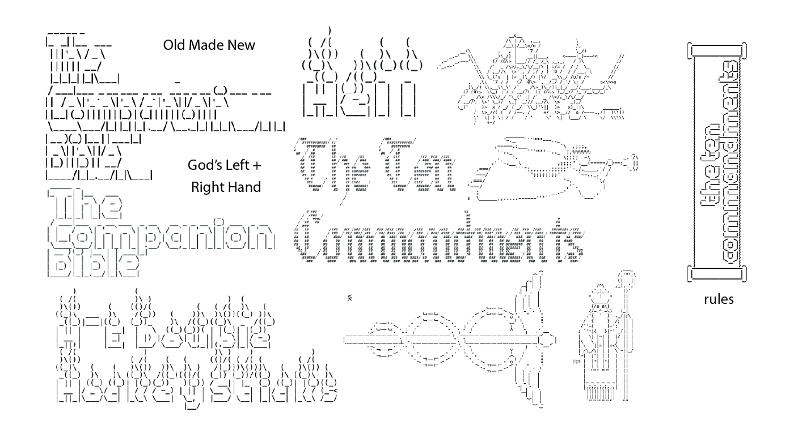
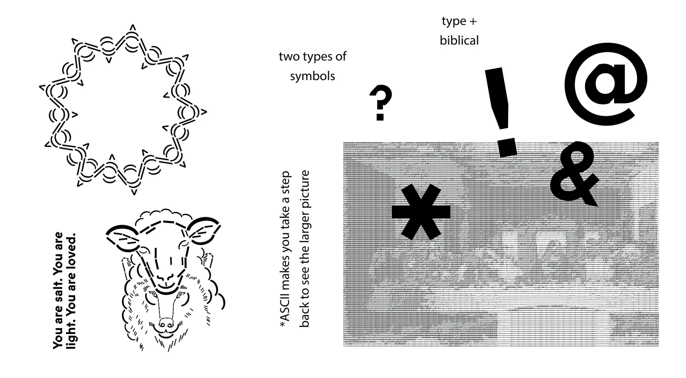
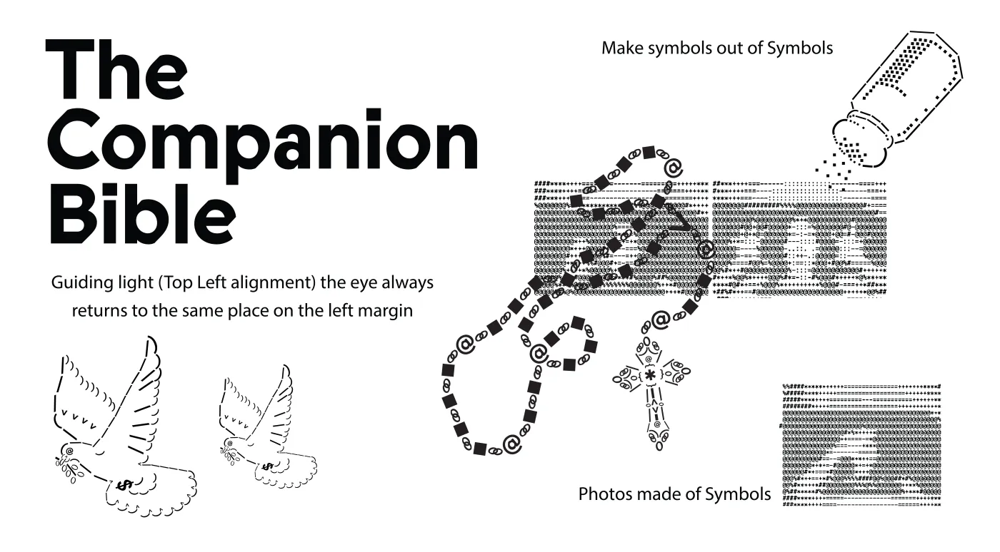
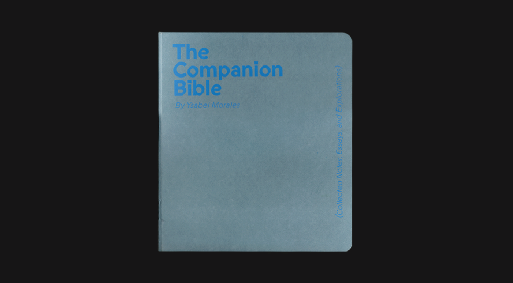
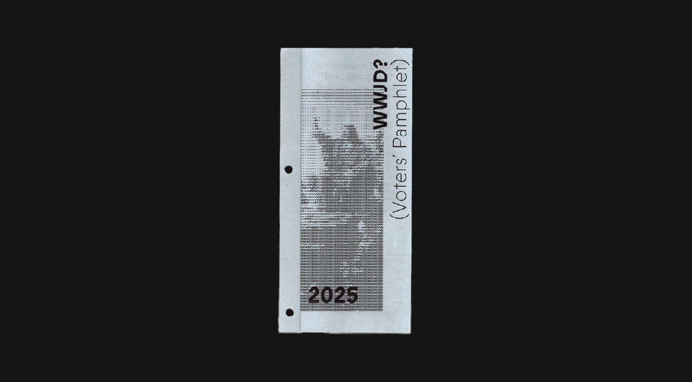
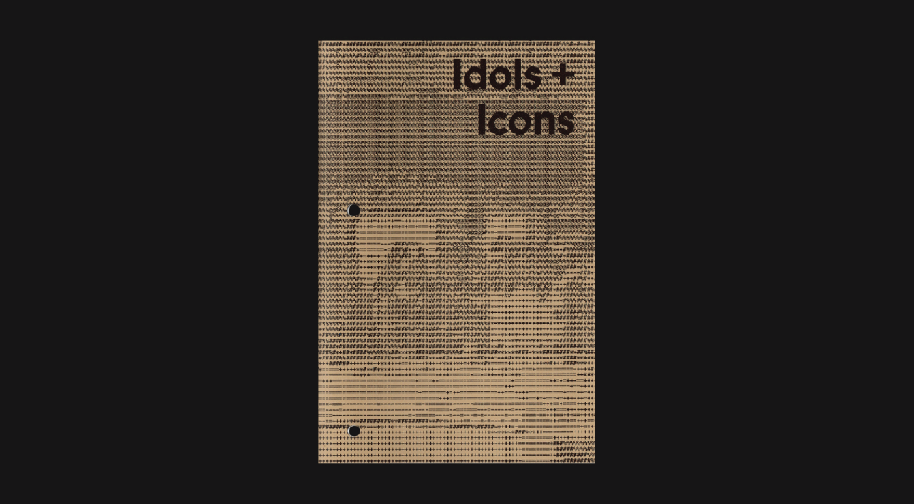
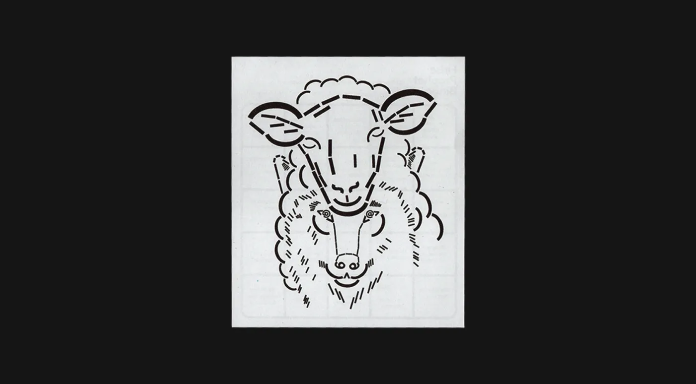

The Companion Bible
A self-directed BFA thesis, 9 months start to finish. The goal was to create a field guide for anyone going through religious deconstruction, something that met people where they were, regardless of faith background, and made a heavy subject feel like it was worth sitting with.
Problem
Most books on deconstruction were either too academic or too prescriptive. This topic needed to feel approachable because it mattered deeply to me, and I wasn't willing to flatten that. The challenge was making heavy, daunting information feel like something you could actually open and interact with honestly.
Design Intent
Every format was chosen to lower the barrier to entry; a devotional book, a voter pamphlet, a recipe card. Familiar containers for unfamiliar feelings. Material choices came from Kelly Paper and Hiromi Paper in LA; and the color palette came directly from the paper itself.
ASCII art was used for photo treatments to hold the tension between the digital spaces where I found community and the liturgical text that made me feel unwelcome. All copy across all 6 publications was written in-house.


Process
Full scope: visual system and identity, copywriting, concept, typography, print production, formatting, mockups, iterations, exhibition design, CNC + Laser cut + Engrave and installation. Working within a college student budget, requiring a cost breakdown for the main publication and editions. 50+ hours stitching the spine across 3 editions and prototypes. Over 20 print prototypes exploring coptic stitching, saddle stitch, and more. Every decision was deliberate and every part of it was made and selected by human hands.
Book Binding Print Screenprinting Prototyping Material Research




Outcome
Exhibited at Otis College's BFA show with 2,000+ attendees, complete with exhibition design, installation, and a mural. Edition 1 of 3 is now held in Otis College's Special Collections. This project confirmed something: the most effective design decisions are often material ones, and craft is never separate from concept.








